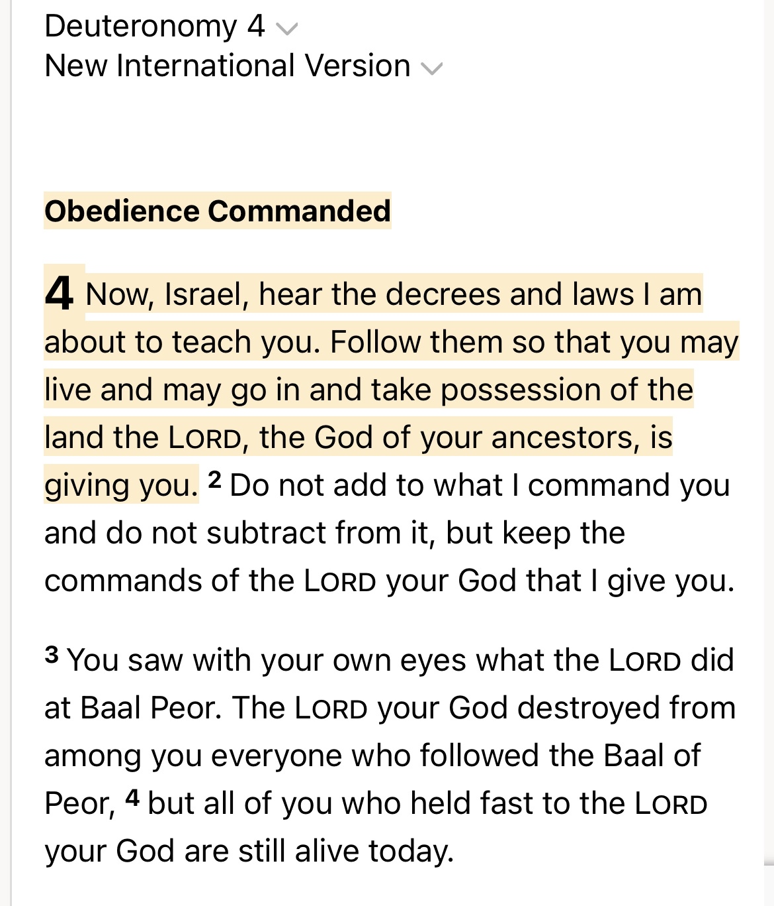
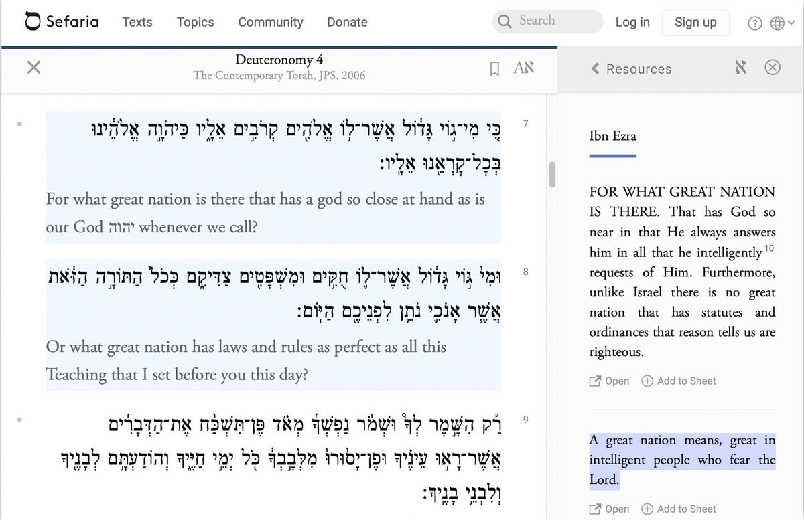
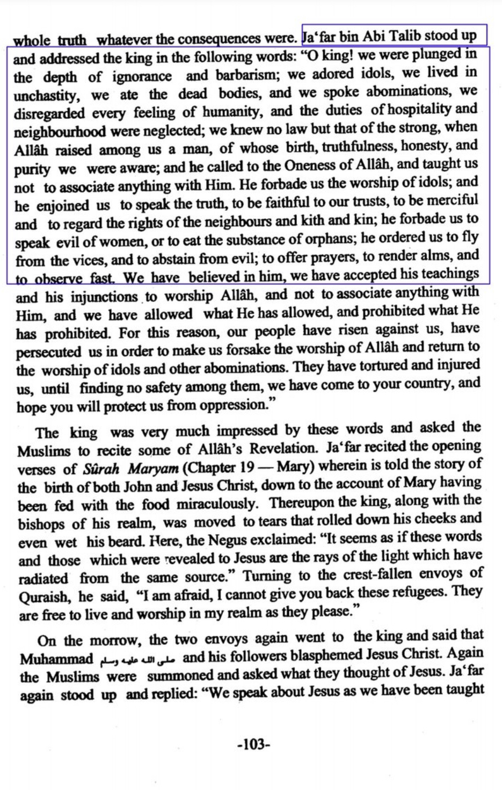
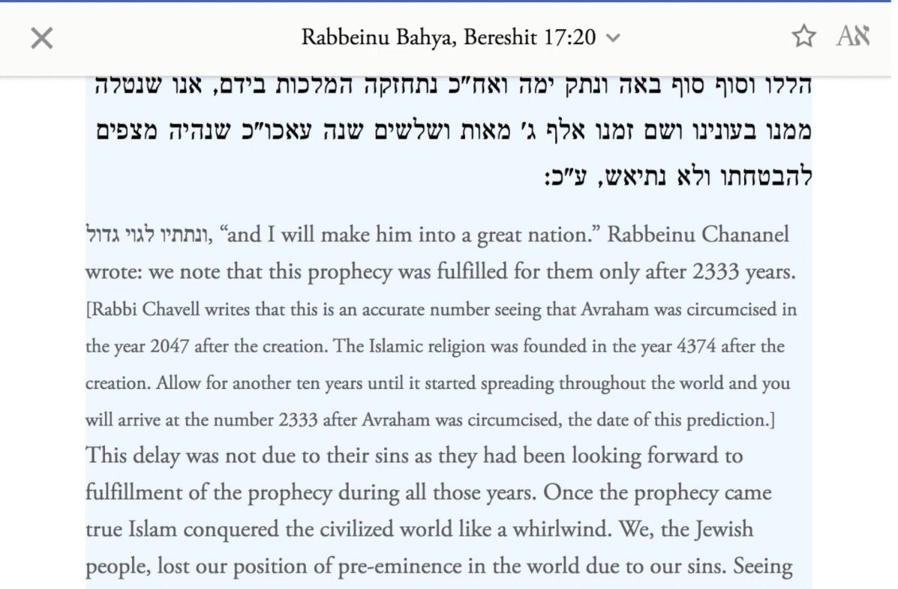
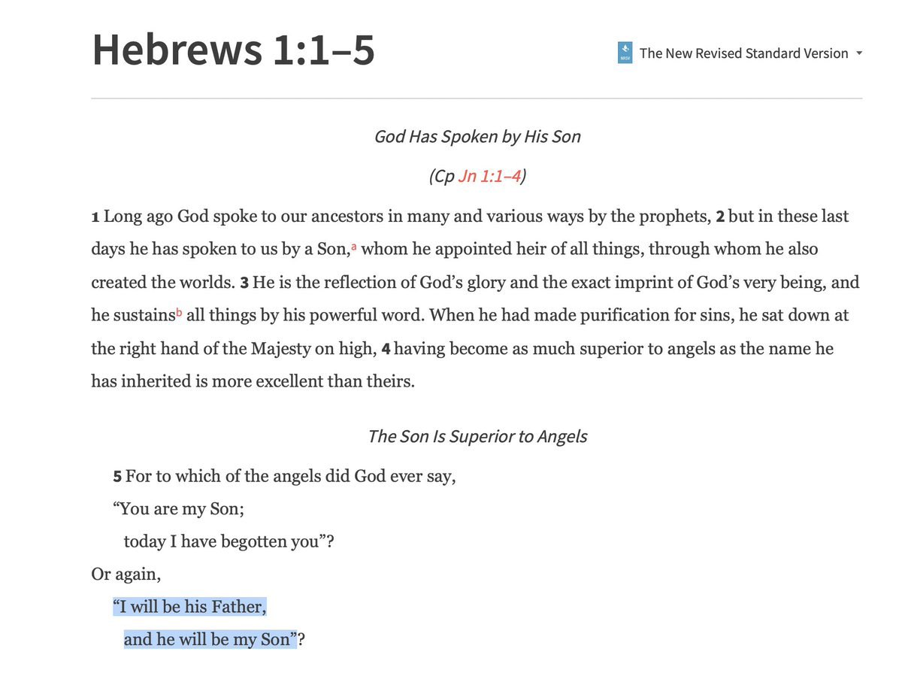
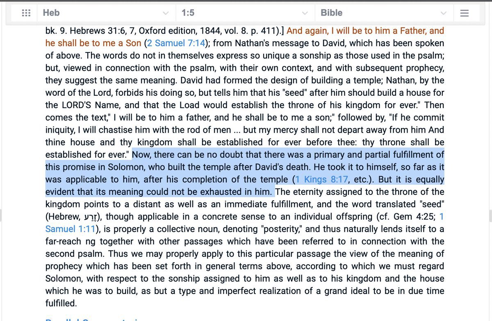
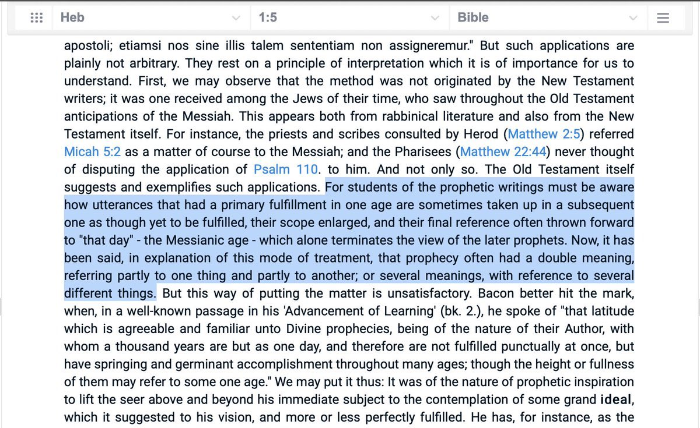
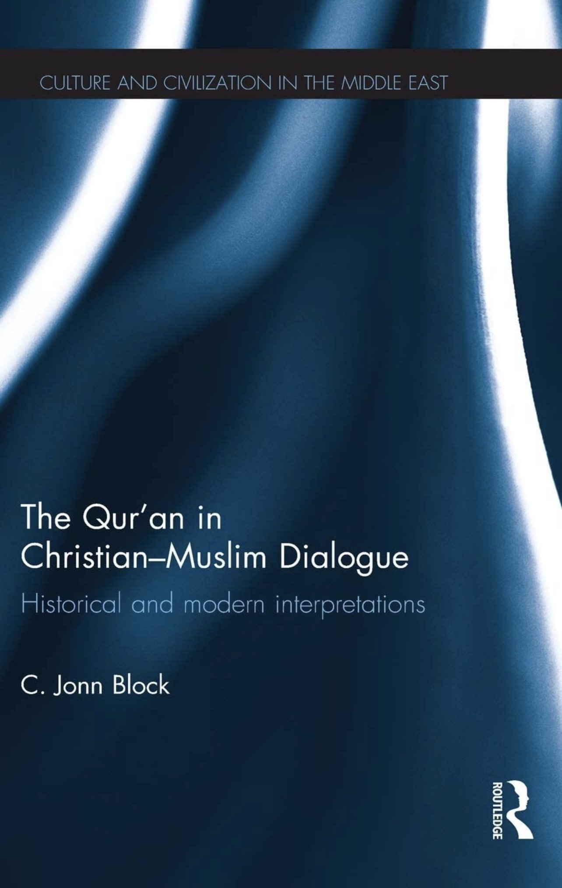
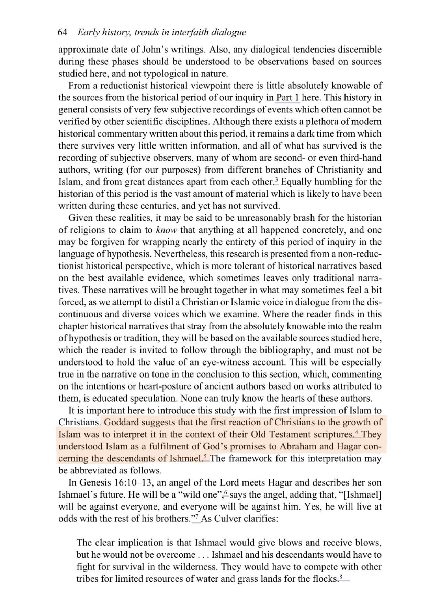

We will be discussing how this Prophecy in Genesis 17:20 is about Prophet Muhammad (SAW) and refuting common objections against this. As only Christians reject it. Since the Jews accepted this being about prophet Muhammed (SAW)
1. Genesis 17 tells us that this nation will be a great nation.
What a great nations means in this context is a nation who will fear God and obey his laws and worship him. And here the proof of that.


Now how do Muslims fulfill this commandments? 1. We are order to only uphold the laws of God. As the Quran states many times. This shows we fear God. Secondly another way we obeying him and fearing him is by worshiping him all day.
Now, a question for the people who are rejecting this would be. How fulfilled this prophecy. Since we know the Arabs where always polytheism. So they didn’t fear god nor did they uphold the laws of God.
And here one of the historians mentions the samething. The Arabs always being pagans Untill Islam.

And when the Arabs got Islam
They were pleased with it.
And here is the Jewish scholars saying this prophecy was fulfilled by the prophet Muhammed (SAW)

Now the Jews scholars like rabbi bahya affirmed this.
1. Objection, David wood. Genesis 25
He proclaims this prophecy was fulfilled by the children of Ishmael (AS) so it can’t be fulfilled again. 1. We see from all throughout the Bible prophecies can be fulfilled and re-fulfilled again. So this shouldn’t be a problem. Secondly his descendants the Ishmaelits
Become polytheism not god fearing people so, how did god keep his promise if the Arabs broke? God kept it by sending muhammed SAW.
2. Genesis 25
It doenst mentioned that this prophecy was fulfilled in Genesis 25 this is just a Christian lie to reject the truth.
1 king 8 There's a Prophecy which was fulfilled in 2 Samuel 7 but the unknown book of “Hebrews 1” says this was fulfilled by Christ. So this shows prophecies can be fulfilled by someone then get Re-fulfilled someone else later. Although this isn’t the case for Genesis 17.

Pulpit Commentary Admit it was already fulfilled but a prophecy can be re fulfilled again later on. So this one is fulfilled by Solomon but again by Christ. So Christians shouldn’t have a problem with this.


What Ibn Al-Qayyim Said About the Genesis 17:20 Prophecy
Ibn Al-Qayyim is speaking about the miraculous change of the descendants of Ishmael pbuh after the prophet Muhammad ﷺ, and how the people of the book interpret that event, he said :
“God sent Muhammad ﷺ (an Ishmaelite) after that there is no rule more powerful than theirs on earth, they’ve crushed the biggest empires, they’ve crushed the rule of Persia and Rome and all the pagans in their way.
The Jews will then say : we don’t deny that, but the good tidings to Hagar and Abraham is about that rulership(Islamic Arab empire) not with prophethood and a law from God(they will just be a great nation in number).
The Muslims reply by saying : there’s two kinds of rulership : 1-A rule without prophethood and guidance from God, which is the rule of mighty tyrannic kings, Or 2-A rule which stems from a prophethood(similar to the Israelites who became a great nation after Moses Deu 4:7-8).
We know the prophecy and the good tidings to Hagar and Abraham about their son Ishmael wasn’t fulfilled with the first kind of rulership(a tyrannic, blind and a godless king) and how can that be good tidings to them?
Even worse then that how can it be fulfilled by a ruler who falsely claimed prophethood and revelation when in reality he lied about God! According to them it has been fulfilled by the worst of the creation, this isn’t good tidings.
This shouldn’t have been good tidings to them, rather this should’ve been a warning, a bad news, just like that of the Anti-Christ, rather this is more evil than Sennacherib and Nebuchadnezzar, and all the tyrannic kings who lied about God!
Then this wasn’t supposed to be good tidings to reassure Abraham and Hagar that Ishmael will live before God and under his blessings.
Rather according to these disbelieves the speech was like this : regarding your son he will be unjust, a tyrant, who will falsely oppress people, he will kiII God’s servants, and change their religion to falsehood.
Those who believe in this have made a great slander upon God.”
Source:
هداية الحيارى في اجوبة اليهود و النصارى
In conclusion: Ibn Al-Qayyim is highlighting the contradiction between God’s promise to Abraham regarding Ishmael in the Bible, and how the Jews and Christians interpret the rise of Islam after the coming of the prophet Muhammad ﷺ the son of Ishmael pbuh.
___
Christians in the 7th Century Believed that Genesis 17:20 was about Islam
“They [The Christians] understood Islam as a fulfillment of God's promises to Abraham and Hagar concerning the descendants of Ishmael”

